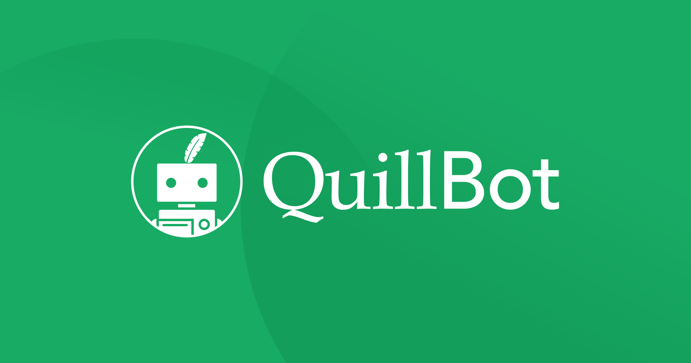
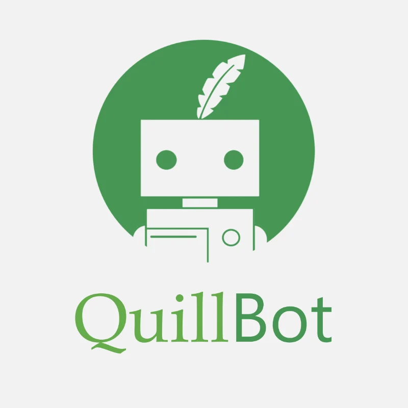

QuillBot es una herramienta de Inteligencia Artificial enfocada en textos. Puede ayudar a escribir, corregir, resumir y reformular textos para que sean más claros y fáciles de entender.

El usuario introduce un texto y QuillBot lo analiza para comprender su significado. Luego puede modificarlo, resumirlo o corregirlo manteniendo su idea principal.
QuillBot es una herramienta útil para mejorar y organizar textos. Puede facilitar tareas de estudio y escritura, aunque siempre es recomendable revisar el resultado antes de utilizarlo.